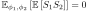
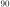

Next: July – Summing the Up: Blog posts 2022 Previous: May – Digital to Contents
Noise is often modeled as Gaussian. However, it might be an unrealistic model in some circumstances if the outlier events are more likely than in the Gaussian distribution. In this case, we might have to model the noise with fat tailed distributions, that have significant mass in the tail distribution.
The -stable distributions
are used as noise models in various applications including economics and electromagnetic communications. Also, the normal distribution belongs to the family of -stable distributions (
) being the only distribution in the family having a well-defined variance. With values
 , even the mean is ill-defined, and the qualitative difference to the normal distribution is clear: imagine investing money in a share that has a fixed expected profit value – say, 10 euros in a year – versus investing to a share that of which value fluctuates so rapidly that the expected profit (mean profit over time) can be – in a sense – anything. Other impulsive noise distribution models are the Middleton distributions, which are derived for the envelope of non-Gaussian electromagnetic noise.
, even the mean is ill-defined, and the qualitative difference to the normal distribution is clear: imagine investing money in a share that has a fixed expected profit value – say, 10 euros in a year – versus investing to a share that of which value fluctuates so rapidly that the expected profit (mean profit over time) can be – in a sense – anything. Other impulsive noise distribution models are the Middleton distributions, which are derived for the envelope of non-Gaussian electromagnetic noise.
In the following, we compare the Gaussian and -stable noises. That is, the in-phase and quadrature components are distributed as Gaussian distribution or -stable distribution with  , accordingly. The following GNU Octave code produces plots of bandwidth-limited analog Gaussian and -stable noises with . The function digitaltoanalog
is given in my May
blog entry. Remember to import the statistical package to Octave.
, accordingly. The following GNU Octave code produces plots of bandwidth-limited analog Gaussian and -stable noises with . The function digitaltoanalog
is given in my May
blog entry. Remember to import the statistical package to Octave.
clear all;
close all;
%%Inverse of the alpha stable CDF with alpha = 1.
invalphaCDF = @(x) tan(0.5*(-1 + 2*x)*pi);
%%Generate N Alpha-stable samples.
N = 100;
alphasamples = invalphaCDF(unifrnd(0,1,1,N));
%%Generate normal samples.
normalsamples = normrnd(0,1,1,N);
%%Convert to analog signal.
T = 1 : 0.1 : N;
alphasamples = digitaltoanalog(T, alphasamples, 1);
normalsamples = digitaltoanalog(T, normalsamples, 1);
alphasamples = alphasamples/(mean(abs(alphasamples))); %Normalize by mean instantaneous amplitude.
normalsamples = normalsamples/(mean(abs(normalsamples)));
figure(1)
plot(T, alphasamples)
legend('Alpha-stable noise')
axis([0 100 -15 15])
figure(2)
plot(T, normalsamples)
legend('Gaussian noise')
axis([0 100 -15 15])
Looking the pictures, it is easy to understand where the term “impulsive noise” comes from.
It is also interesting to compare the audiolized noise-signals: my Soundcloud.
References: